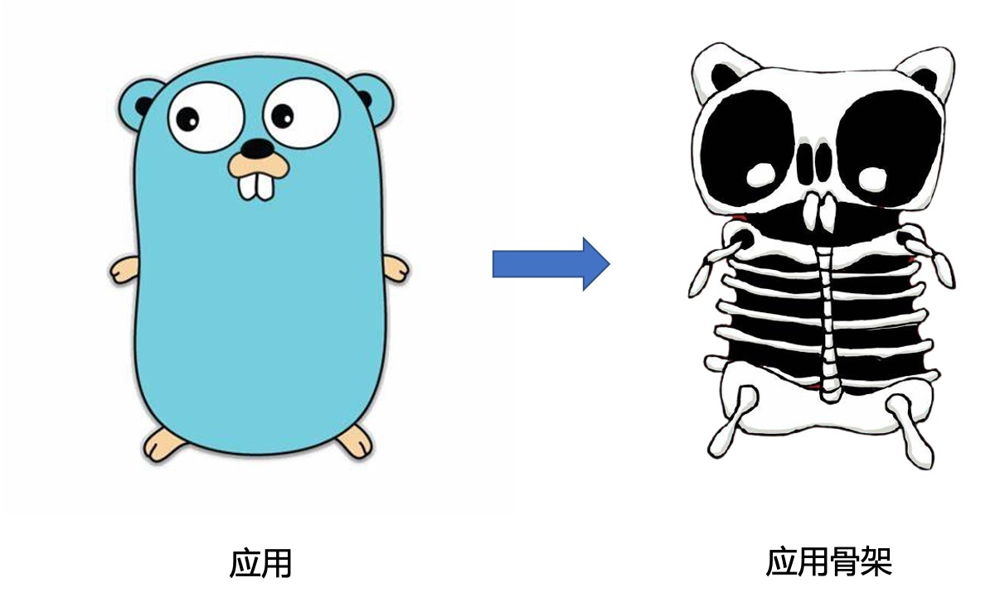
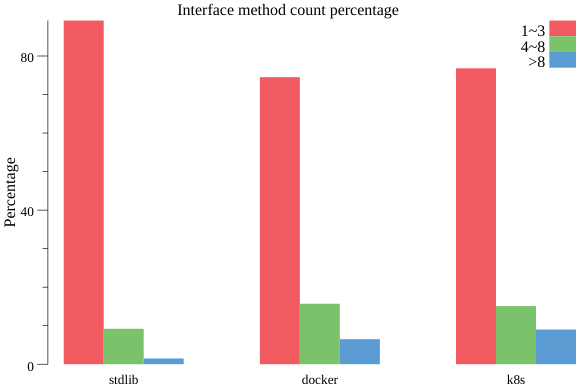
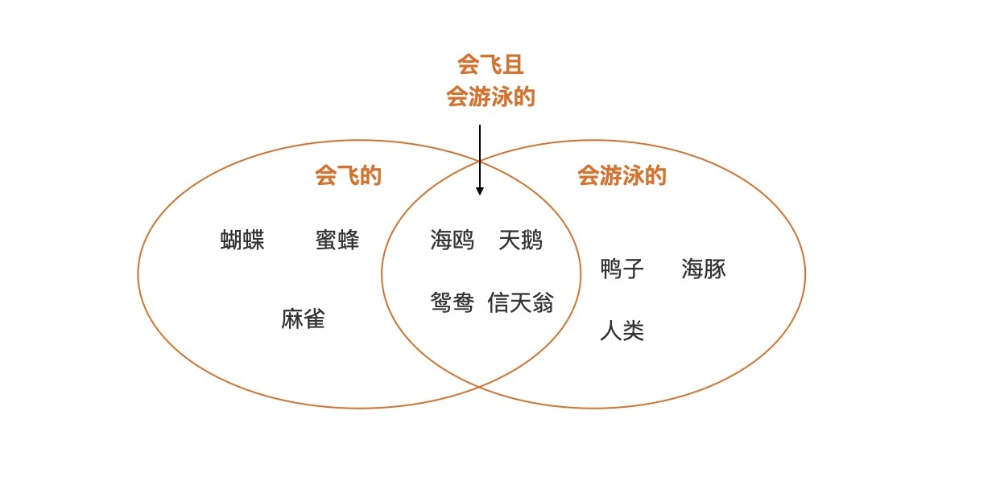
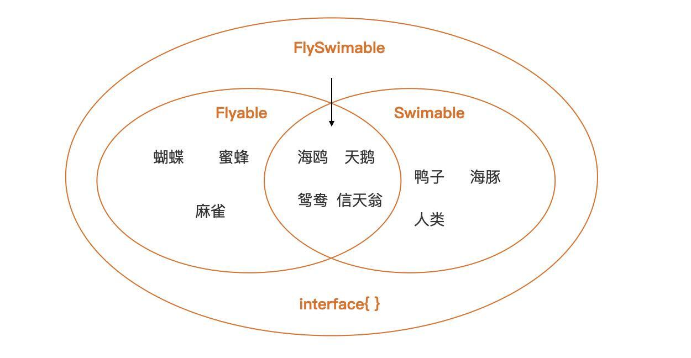
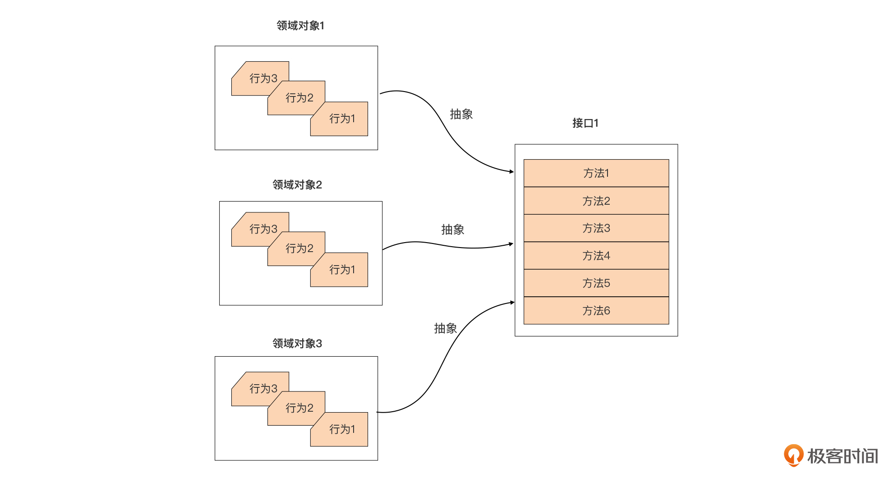
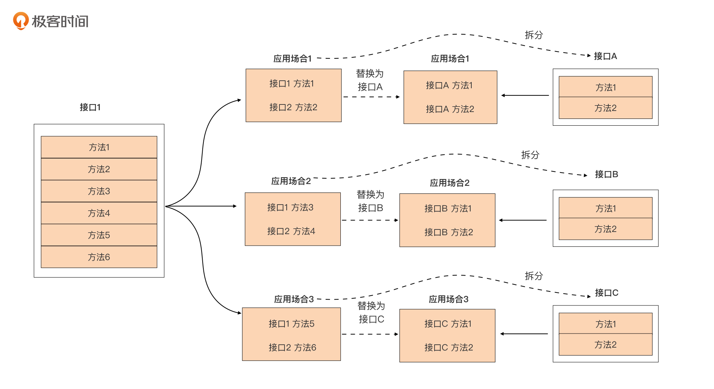

- 00 开篇词 这样入门Go，才能少走弯路.md.html
- 01 前世今生：你不得不了解的Go的历史和现状.md.html
- 02 拒绝“Hello and Bye”：Go语言的设计哲学是怎么一回事？.md.html
- 03 配好环境：选择一种最适合你的Go安装方法.md.html
- 04 初窥门径：一个Go程序的结构是怎样的？.md.html
- 05 标准先行：Go项目的布局标准是什么？.md.html
- 06 构建模式：Go是怎么解决包依赖管理问题的？.md.html
- 07 构建模式：Go Module的6类常规操作.md.html
- 08 入口函数与包初始化：搞清Go程序的执行次序.md.html
- 09 即学即练：构建一个Web服务就是这么简单.md.html
- 10 变量声明：静态语言有别于动态语言的重要特征.md.html
- 11 代码块与作用域：如何保证变量不会被遮蔽？.md.html
- 12 基本数据类型：Go原生支持的数值类型有哪些？.md.html
- 13 基本数据类型：为什么Go要原生支持字符串类型？.md.html
- 14 常量：Go在“常量”设计上的创新有哪些？.md.html
- 15 同构复合类型：从定长数组到变长切片.md.html
- 16 复合数据类型：原生map类型的实现机制是怎样的？.md.html
- 17 复合数据类型：用结构体建立对真实世界的抽象.md.html
- 18 控制结构：if的“快乐路径”原则.md.html
- 19 控制结构：Go的for循环，仅此一种.md.html
- 20 控制结构：Go中的switch语句有哪些变化？.md.html
- 21 函数：请叫我“一等公民”.md.html
- 22 函数：怎么结合多返回值进行错误处理？.md.html
- 23 函数：怎么让函数更简洁健壮？.md.html
- 24 方法：理解“方法”的本质.md.html
- 25 方法：方法集合与如何选择receiver类型？.md.html
- 26 方法：如何用类型嵌入模拟实现“继承”？.md.html
- 27 即学即练：跟踪函数调用链，理解代码更直观.md.html
- 28 接口：接口即契约.md.html
- 29 接口：为什么nil接口不等于nil？.md.html
- 30 接口：Go中最强大的魔法.md.html
- 31 并发：Go的并发方案实现方案是怎样的？.md.html
- 32 并发：聊聊Goroutine调度器的原理.md.html
- 33 并发：小channel中蕴含大智慧.md.html
- 34 并发：如何使用共享变量？.md.html
- 35 即学即练：如何实现一个轻量级线程池？.md.html
- 36 打稳根基：怎么实现一个TCP服务器？（上）.md.html
- 37 代码操练：怎么实现一个TCP服务器？（中）.md.html
- 38 成果优化：怎么实现一个TCP服务器？（下）.md.html
- 39 驯服泛型：了解类型参数.md.html
- 40 驯服泛型：定义泛型约束.md.html
- 41 驯服泛型：明确使用时机.md.html
- 元旦快乐 这是一份暂时停更的声明.md.html
- 加餐 作为Go Module的作者，你应该知道的几件事.md.html
- 加餐 如何拉取私有的Go Module？.md.html
- 加餐 我“私藏”的那些优质且权威的Go语言学习资料.md.html
- 加餐 聊聊Go 1.17版本的那些新特性.md.html
- 加餐 聊聊Go语言的指针.md.html
- 加餐 聊聊最近大热的Go泛型.md.html
- 大咖助阵 叶剑峰：Go语言中常用的那些代码优化点.md.html
- 大咖助阵 大明：Go泛型，泛了，但没有完全泛.md.html
- 大咖助阵 孔令飞：从小白到“老鸟”，我的Go语言进阶之路.md.html
- 大咖助阵 徐祥曦：从销售到分布式存储工程师，我与 Go 的故事.md.html
- 大咖助阵 曹春晖：聊聊 Go 语言的 GC 实现.md.html
- 大咖助阵 海纳：聊聊语言中的类型系统与泛型.md.html
- 期中测试 一起检验下你的学习成果吧.md.html
- 用户故事 罗杰：我的Go语言学习之路.md.html
- 结束语 和你一起迎接Go的黄金十年.md.html
- 结课测试 快来检验下你的学习成果吧！.md.html
- 捐赠
28 接口：接口即契约
你好，我是Tony Bai。
从这一讲开始，我们将进入我们这门课核心篇的学习。相对于前两个篇章而言，这篇的内容更加考验大家的理解力，不过只要你跟上节奏，多多思考，掌握核心篇也不是什么困难的事情。
我先花小小的篇幅介绍一下核心篇的内容。核心篇主要涵盖接口类型语法与Go原生提供的三个并发原语（Goroutine、channel与select），之所以将它们放在核心语法的位置，是因为它们不仅代表了Go语言在编程语言领域的创新，更是影响Go应用骨架（Application Skeleton）设计的重要元素。
所谓应用骨架，就是指将应用代码中的业务逻辑、算法实现逻辑、错误处理逻辑等“皮肉”逐一揭去后所呈现出的应用结构，这就好比下面这个可爱的Gopher（地鼠）通过X光机所看到的骨骼结构：

通过这幅骨架结构图，你能看到哪些有用的信息呢？从静态角度去看，我们能清晰地看到应用程序的组成部分以及各个部分之间的连接；从动态角度去看，我们能看到这幅骨架上可独立运动的几大机构。
前者我们可以将其理解为Go应用内部的耦合设计，而后者我们可以理解为应用的并发设计。而接口类型与Go并发语法恰分别是耦合设计与并发设计的主要参与者，因此Go应用的骨架设计离不开它们。一个良好的骨架设计又决定了应用的健壮性、灵活性与扩展性，甚至是应用的运行效率。我们后面在讲解接口类型与并发原语的应用模式的时候，还会结合例子深入讲解。
所以，在接下的三讲中，我们将系统学习Go语言的接口类型，围绕接口类型的基础知识与接口定义的惯例、接口类型的内部表示以及接口的应用模式这三方面内容进行讲解。在这一讲中，我们先来学习一下接口类型的基础知识部分。
认识接口类型
在前面的学习中，我们曾不止一次接触过接口类型，对接口类型也有了一些粗浅的了解。我们知道，接口类型是由type和interface关键字定义的一组方法集合，其中，方法集合唯一确定了这个接口类型所表示的接口。下面是一个典型的接口类型MyInterface的定义：
type MyInterface interface {
M1(int) error
M2(io.Writer, ...string)
}
通过这个定义，我们可以看到，接口类型MyInterface所表示的接口的方法集合，包含两个方法M1和M2。之所以称M1和M2为“方法”，更多是从这个接口的实现者的角度考虑的。但从上面接口类型声明中各个“方法”的形式上来看，这更像是不带有func关键字的函数名+函数签名（参数列表+返回值列表）的组合。
并且，和我们在21讲中提到的函数签名一样，我们在接口类型的方法集合中声明的方法，它的参数列表不需要写出形参名字，返回值列表也是如此。也就是说，方法的参数列表中形参名字与返回值列表中的具名返回值，都不作为区分两个方法的凭据。
比如下面的MyInterface接口类型的定义与上面的MyInterface接口类型定义都是等价的：
type MyInterface interface {
M1(a int) error
M2(w io.Writer, strs ...string)
}
type MyInterface interface {
M1(n int) error
M2(w io.Writer, args ...string)
}
不过，Go语言要求接口类型声明中的方法必须是具名的，并且方法名字在这个接口类型的方法集合中是唯一的。前面我们在学习类型嵌入时就学到过：Go 1.14版本以后，Go接口类型允许嵌入的不同接口类型的方法集合存在交集，但前提是交集中的方法不仅名字要一样，它的方法签名部分也要保持一致，也就是参数列表与返回值列表也要相同，否则Go编译器照样会报错。
比如下面示例中Interface3嵌入了Interface1和Interface2，但后两者交集中的M1方法的函数签名不同，导致了编译出错：
type Interface1 interface {
M1()
}
type Interface2 interface {
M1(string)
M2()
}
type Interface3 interface{
Interface1
Interface2 // 编译器报错：duplicate method M1
M3()
}
看到这里，不知道你有没有注意到，我举的例子中的方法都是首字母大写的导出方法，那在接口类型定义中是否可以声明首字母小写的非导出方法呢？
答案是可以的。在Go接口类型的方法集合中放入首字母小写的非导出方法也是合法的，并且我们在Go标准库中也找到了带有非导出方法的接口类型定义，比如context包中的canceler接口类型，它的代码如下：
// $GOROOT/src/context.go
// A canceler is a context type that can be canceled directly. The
// implementations are *cancelCtx and *timerCtx.
type canceler interface {
cancel(removeFromParent bool, err error)
Done() <-chan struct{}
}
但这样的例子并不多。通过对标准库这为数不多的例子，我们可以看到，如果接口类型的方法集合中包含非导出方法，那么这个接口类型自身通常也是非导出的，它的应用范围也仅局限于包内。不过，在日常实际编码过程中，我们极少使用这种带有非导出方法的接口类型，我们简单了解一下就可以了。
除了上面这种常规情况，还有空接口类型这种特殊情况。如果一个接口类型定义中没有一个方法，那么它的方法集合就为空，比如下面的EmptyInterface接口类型：
type EmptyInterface interface {
}
这个方法集合为空的接口类型就被称为空接口类型，但通常我们不需要自己显式定义这类空接口类型，我们直接使用interface{}这个类型字面值作为所有空接口类型的代表就可以了。
接口类型一旦被定义后，它就和其他Go类型一样可以用于声明变量，比如：
var err error // err是一个error接口类型的实例变量
var r io.Reader // r是一个io.Reader接口类型的实例变量
这些类型为接口类型的变量被称为接口类型变量，如果没有被显式赋予初值，接口类型变量的默认值为nil。如果要为接口类型变量显式赋予初值，我们就要为接口类型变量选择合法的右值。
Go规定：如果一个类型T的方法集合是某接口类型I的方法集合的等价集合或超集，我们就说类型T实现了接口类型I，那么类型T的变量就可以作为合法的右值赋值给接口类型I的变量。在第25和26两讲中，我们已经知道一个类型T和其指针类型*T的方法集合的求取规则了，所以这里我们也就不难判断一个类型是否实现了某个接口。
如果一个变量的类型是空接口类型，由于空接口类型的方法集合为空，这就意味着任何类型都实现了空接口的方法集合，所以我们可以将任何类型的值作为右值，赋值给空接口类型的变量，比如下面例子：
var i interface{} = 15 // ok
i = "hello, golang" // ok
type T struct{}
var t T
i = t // ok
i = &t // ok
空接口类型的这一可接受任意类型变量值作为右值的特性，让他成为Go加入泛型语法之前唯一一种具有“泛型”能力的语法元素，包括Go标准库在内的一些通用数据结构与算法的实现，都使用了空类型interface{}作为数据元素的类型，这样我们就无需为每种支持的元素类型单独做一份代码拷贝了。
Go语言还支持接口类型变量赋值的“逆操作”，也就是通过接口类型变量“还原”它的右值的类型与值信息，这个过程被称为“类型断言（Type Assertion）”。类型断言通常使用下面的语法形式：
v, ok := i.(T)
其中i是某一个接口类型变量，如果T是一个非接口类型且T是想要还原的类型，那么这句代码的含义就是断言存储在接口类型变量i中的值的类型为T。
如果接口类型变量i之前被赋予的值确为T类型的值，那么这个语句执行后，左侧“comma, ok”语句中的变量ok的值将为true，变量v的类型为T，它值会是之前变量i的右值。如果i之前被赋予的值不是T类型的值，那么这个语句执行后，变量ok的值为false，变量v的类型还是那个要还原的类型，但它的值是类型T的零值。
类型断言也支持下面这种语法形式：
v := i.(T)
但在这种形式下，一旦接口变量i之前被赋予的值不是T类型的值，那么这个语句将抛出panic。如果变量i被赋予的值是T类型的值，那么变量v的类型为T，它的值就会是之前变量i的右值。由于可能出现panic，所以我们并不推荐使用这种类型断言的语法形式。
为了加深你的理解，接下来我们通过一个例子来直观看一下类型断言的语义：
var a int64 = 13
var i interface{} = a
v1, ok := i.(int64)
fmt.Printf("v1=%d, the type of v1 is %T, ok=%t\n", v1, v1, ok) // v1=13, the type of v1 is int64, ok=true
v2, ok := i.(string)
fmt.Printf("v2=%s, the type of v2 is %T, ok=%t\n", v2, v2, ok) // v2=, the type of v2 is string, ok=false
v3 := i.(int64)
fmt.Printf("v3=%d, the type of v3 is %T\n", v3, v3) // v3=13, the type of v3 is int64
v4 := i.([]int) // panic: interface conversion: interface {} is int64, not []int
fmt.Printf("the type of v4 is %T\n", v4)
你可以看到，这个例子的输出结果与我们之前讲解的是一致的。
在这段代码中，如果v, ok := i.(T)中的T是一个接口类型，那么类型断言的语义就会变成：断言i的值实现了接口类型T。如果断言成功，变量v的类型为i的值的类型，而并非接口类型T。如果断言失败，v的类型信息为接口类型T，它的值为nil，下面我们再来看一个T为接口类型的示例：
type MyInterface interface {
M1()
}
type T int
func (T) M1() {
println("T's M1")
}
func main() {
var t T
var i interface{} = t
v1, ok := i.(MyInterface)
if !ok {
panic("the value of i is not MyInterface")
}
v1.M1()
fmt.Printf("the type of v1 is %T\n", v1) // the type of v1 is main.T
i = int64(13)
v2, ok := i.(MyInterface)
fmt.Printf("the type of v2 is %T\n", v2) // the type of v2 is <nil>
// v2 = 13 // cannot use 1 (type int) as type MyInterface in assignment: int does not implement MyInterface (missing M1 method)
}
我们看到，通过the type of v2 is <nil>，我们其实是看不出断言失败后的变量v2的类型的，但通过最后一行代码的编译器错误提示，我们能清晰地看到v2的类型信息为MyInterface。
其实，接口类型的类型断言还有一个变种，那就是type switch，不过这个我们已经在第20讲讲解switch语句的时候讲过了，你可以再去复习一下。
好了，到这里关于接口类型的基础语法我们已经全部讲完了。有了这个基础后，我们再来看看Go语言接口定义的惯例，也就是尽量定义“小接口”。
尽量定义“小接口”
接口类型的背后，是通过把类型的行为抽象成契约，建立双方共同遵守的约定，这种契约将双方的耦合降到了最低的程度。和生活工作中的契约有繁有简，签署方式多样一样，代码间的契约也有多有少，有大有小，而且达成契约的方式也有所不同。 而Go选择了去繁就简的形式，这主要体现在以下两点上：
- 隐式契约，无需签署，自动生效
Go语言中接口类型与它的实现者之间的关系是隐式的，不需要像其他语言（比如Java）那样要求实现者显式放置“implements”进行修饰，实现者只需要实现接口方法集合中的全部方法便算是遵守了契约，并立即生效了。
- 更倾向于“小契约”
这点也不难理解。你想，如果契约太繁杂了就会束缚了手脚，缺少了灵活性，抑制了表现力。所以Go选择了使用“小契约”，表现在代码上就是尽量定义小接口，即方法个数在1~3个之间的接口。Go语言之父Rob Pike曾说过的“接口越大，抽象程度越弱”，这也是Go社区倾向定义小接口的另外一种表述。
Go对小接口的青睐在它的标准库中体现得淋漓尽致，这里我给出了标准库中一些我们日常开发中常用的接口的定义：
// $GOROOT/src/builtin/builtin.go
type error interface {
Error() string
}
// $GOROOT/src/io/io.go
type Reader interface {
Read(p []byte) (n int, err error)
}
// $GOROOT/src/net/http/server.go
type Handler interface {
ServeHTTP(ResponseWriter, *Request)
}
type ResponseWriter interface {
Header() Header
Write([]byte) (int, error)
WriteHeader(int)
}
我们看到，上述这些接口的方法数量在1~3个之间，这种“小接口”的Go惯例也已经被Go社区项目广泛采用。我统计了早期版本的Go标准库（Go 1.13版本）、Docker项目（Docker 19.03版本）以及Kubernetes项目（Kubernetes 1.17版本）中定义的接口类型方法集合中方法数量，你可以看下：

从图中我们可以看到，无论是Go标准库，还是Go社区知名项目，它们基本都遵循了“尽量定义小接口”的惯例，接口方法数量在1~3范围内的接口占了绝大多数。
那么在编码层面，小接口究竟有哪些优势呢？这里总结了几点，我们一起来看一下。
小接口有哪些优势？
第一点：接口越小，抽象程度越高
计算机程序本身就是对真实世界的抽象与再建构。抽象就是对同类事物去除它具体的、次要的方面，抽取它相同的、主要的方面。不同的抽象程度，会导致抽象出的概念对应的事物的集合不同。抽象程度越高，对应的集合空间就越大；抽象程度越低，也就是越具像化，更接近事物真实面貌，对应的集合空间越小。
我们举一个生活中的简单例子。你可以看下这张示意图，它是对生活中不同抽象程度的形象诠释：- - 这张图中我们分别建立了三个抽象：
- 会飞的。这个抽象对应的事物集合包括：蝴蝶、蜜蜂、麻雀、天鹅、鸳鸯、海鸥和信天翁；
- 会游泳的。它对应的事物集合包括：鸭子、海豚、人类、天鹅、鸳鸯、海鸥和信天翁；
- 会飞且会游泳的。这个抽象对应的事物集合包括：天鹅、鸳鸯、海鸥和信天翁。
我们看到，“会飞的”、“会游泳的”这两个抽象对应的事物集合，要大于“会飞且会游泳的”所对应的事物集合空间，也就是说“会飞的”、“会游泳的”这两个抽象程度更高。
我们将上面的抽象转换为Go代码看看：
// 会飞的
type Flyable interface {
Fly()
}
// 会游泳的
type Swimable interface {
Swim()
}
// 会飞且会游泳的
type FlySwimable interface {
Flyable
Swimable
}
我们用上述定义的接口替换上图中的抽象，再得到这张示意图：
- 我们可以直观地看到，这张图中的Flyable只有一个Fly方法，FlySwimable则包含两个方法Fly和Swim。我们看到，具有更少方法的Flyable的抽象程度相对于FlySwimable要高，包含的事物集合（7种动物）也要比FlySwimable的事物集合（4种动物）大。也就是说，接口越小（接口方法少)，抽象程度越高，对应的事物集合越大。
而这种情况的极限恰恰就是无方法的空接口interface{}，空接口的这个抽象对应的事物集合空间包含了Go语言世界的所有事物。
第二点：小接口易于实现和测试
这是一个显而易见的优点。小接口拥有比较少的方法，一般情况下只有一个方法。所以要想满足这一接口，我们只需要实现一个方法或者少数几个方法就可以了，这显然要比实现拥有较多方法的接口要容易得多。尤其是在单元测试环节，构建类型去实现只有少量方法的接口要比实现拥有较多方法的接口付出的劳动要少许多。
第三点：小接口表示的“契约”职责单一，易于复用组合
我们前面就讲过，Go推崇通过组合的方式构建程序。Go开发人员一般会尝试通过嵌入其他已有接口类型的方式来构建新接口类型，就像通过嵌入io.Reader和io.Writer构建io.ReadWriter那样。
那构建时，如果有众多候选接口类型供我们选择，我们会怎么选择呢？
显然，我们会选择那些新接口类型需要的契约职责，同时也要求不要引入我们不需要的契约职责。在这样的情况下，拥有单一或少数方法的小接口便更有可能成为我们的目标，而那些拥有较多方法的大接口，可能会因引入了诸多不需要的契约职责而被放弃。由此可见，小接口更契合Go的组合思想，也更容易发挥出组合的威力。
定义小接口，你可以遵循的几点
保持简单有时候比复杂更难。小接口虽好，但如何定义出小接口是摆在所有Gopher面前的一道难题。这道题没有标准答案，但有一些点可供我们在实践中考量遵循。
- 首先，别管接口大小，先抽象出接口。
要设计和定义出小接口，前提是需要先有接口。
Go语言还比较年轻，它的设计哲学和推崇的编程理念可能还没被广大Gopher 100%理解、接纳和应用于实践当中，尤其是Go所推崇的基于接口的组合思想。
尽管接口不是Go独有的，但专注于接口是编写强大而灵活的Go代码的关键。因此，在定义小接口之前，我们需要先针对问题领域进行深入理解，聚焦抽象并发现接口，就像下图所展示的那样，先针对领域对象的行为进行抽象，形成一个接口集合：

初期，我们先不要介意这个接口集合中方法的数量，因为对问题域的理解是循序渐进的，在第一版代码中直接定义出小接口可能并不现实。而且，标准库中的io.Reader和io.Writer也不是在Go刚诞生时就有的，而是在发现对网络、文件、其他字节数据处理的实现十分相似之后才抽象出来的。并且越偏向业务层，抽象难度就越高，这或许也是前面图中Go标准库小接口（1~3个方法）占比略高于Docker和Kubernetes的原因。
- 第二，将大接口拆分为小接口。
有了接口后，我们就会看到接口被用在了代码的各个地方。一段时间后，我们就来分析哪些场合使用了接口的哪些方法，是否可以将这些场合使用的接口的方法提取出来，放入一个新的小接口中，就像下面图示中的那样：

这张图中的大接口1定义了多个方法，一段时间后，我们发现方法1和方法2经常用在场合1中，方法3和方法4经常用在场合2中，方法5和方法6经常用在场合3中，大接口1的方法呈现出一种按业务逻辑自然分组的状态。
这个时候我们可以将这三组方法分别提取出来放入三个小接口中，也就是将大接口1拆分为三个小接口A、B和C。拆分后，原应用场合1~3使用接口1的地方就可以无缝替换为接口A、B、C了。
- 最后，我们要注意接口的单一契约职责。
那么，上面已经被拆分成的小接口是否需要进一步拆分，直至每个接口都只有一个方法呢？这个依然没有标准答案，不过你依然可以考量一下现有小接口是否需要满足单一契约职责，就像io.Reader那样。如果需要，就可以进一步拆分，提升抽象程度。
小结
好了，今天的课讲到这里就结束了，现在我们一起来回顾一下吧。
接口类型被列入Go核心语法，它的重要性不言自明，它既是Go语言的一个微创新，也是影响Go应用骨架设计的重要元素。
在这一节课中，我们首先系统学习了接口类型的基础知识，包括接口类型的声明、接口类型变量的定义与初始化以及类型断言等，这里面有很多语法细节，你一定要牢牢掌握，避免后续在使用接口时走弯路。比如，某接口类型定义中嵌入的不同接口类型的方法集合若存在交集，交集中的方法不仅名字要一样，函数签名也要相同。再比如，对接口类型和非接口类型进行类型断言的语义是不完全相同的。
Go接口背后的本质是一种“契约”，通过契约我们可以将代码双方的耦合降至最低。Go惯例上推荐尽量定义小接口，一般而言接口方法集合中的方法个数不要超过三个，单一方法的接口更受Go社区青睐。
小接口有诸多优点，比如，抽象程度高、易于测试与实现、与组合的设计思想一脉相承、鼓励你编写组合的代码，等等。但要一步到位地定义出小接口不是一件简单的事，尤其是在复杂的业务领域。我这里也给出了循序渐进地抽象出小接口的步骤，你可以参考并在实践中尝试一下。
思考题
- 如果Go中没有接口类型，会发生什么，会对我们的代码设计产生怎样的影响？
- 关于尽量定义小接口，你有什么好方法？
欢迎在留言区留下你的观点与想法。也欢迎你把这节课分享给更多对Go语言的接口感兴趣的朋友。我是Tony Bai，下节课见。
© 2019 - 2023 Liangliang Lee. Powered by gin and hexo-theme-book.